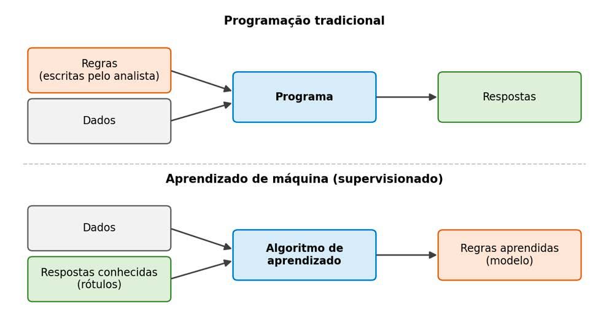

Módulo 3 | Aula 1
Introdução ao Machine Learning
Da programação de regras ao aprendizado a partir de exemplos
Na aula 1 do módulo 2, escrevemos nosso primeiro programa de classificação, mesmo sem usar esse nome. Para decidir se uma pessoa era idosa, bastou uma regra explícita:
idade = 67
if idade >= 60:
print("Pessoa idosa")
else:
print("Pessoa não idosa")Nesse caso, a regra é conhecida e simples: quem a escreve é o analista e o computador apenas a executa. Essa é a lógica da programação tradicional: fornecemos regras e dados, e o programa produz respostas.
Agora pense em uma pergunta como: "quais características de uma internação indicam maior risco de óbito hospitalar?" A resposta depende de dezenas de fatores: idade, diagnóstico principal, procedimento realizado, tipo de estabelecimento, município de residência, que se combinam de maneiras que ninguém conseguiria listar à mão em comandos if. Ainda assim, o SIH/SUS registra milhões de internações para as quais já sabemos o desfecho.
O aprendizado de máquina inverte a lógica: em vez de escrever as regras, fornecemos exemplos com as respostas conhecidas, e um algoritmo infere, a partir deles, as regras que melhor relacionam os dados às respostas. O resultado desse processo é chamado de modelo, e a etapa em que o algoritmo aprende com os exemplos é chamada de treinamento.
Figura 1 - Programação tradicional e aprendizado de máquina supervisionado.

Programação tradicional
O analista escreve explicitamente as regras que processam os dados para produzir respostas (Regras + Dados → Respostas).
Aprendizado de máquina
O algoritmo recebe dados e respostas conhecidas e infere as regras que os relacionam (Dados + Respostas → Regras).
Modelo
O conjunto de regras aprendidas, que pode ser aplicado a casos novos para gerar previsões.
Treinamento
A etapa em que o algoritmo ajusta o modelo a partir de exemplos.
E a estatística?
Uma dúvida comum é se o ML seria uma alternativa à estatística. Não é. Muitos métodos usados em ML, como regressão linear, cujos fundamentos remontam ao século XIX, nasceram na estatística, e ambos os campos aprendem parâmetros a partir de dados. A diferença está mais na ênfase do que no método. A estatística clássica costuma priorizar a inferência: estimar efeitos, medir incertezas e explicar relações entre variáveis. O ML costuma priorizar a predição: acertar o desfecho de casos que ainda não foram observados.
Na Saúde Pública, as duas perguntas importam. Saber que a escolaridade materna está associada a baixo peso ao nascer (inferência) orienta políticas; estimar quais gestantes de um território têm maior risco (predição) orienta a organização do cuidado. É exatamente a complementaridade defendida desde a aula 1: a Ciência de Dados não substitui a estatística, ela a expande.
O estatístico Leo Breiman descreveu essa diferença de ênfase como "duas culturas" da modelagem estatística: uma voltada a explicar o mecanismo que gerou os dados e outra voltada à precisão preditiva. O artigo é uma leitura clássica para quem quer entender a relação entre estatística e aprendizado de máquina: BREIMAN, L. Statistical modeling: the two cultures. Statistical Science, v. 16, n. 3, p. 199-231, 2001.